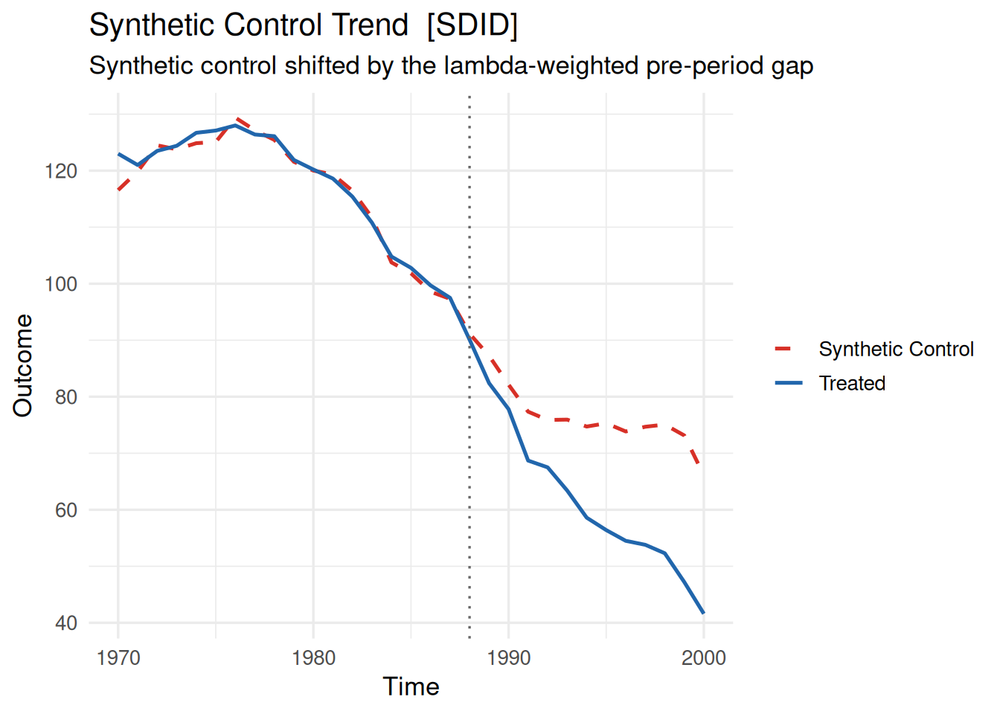
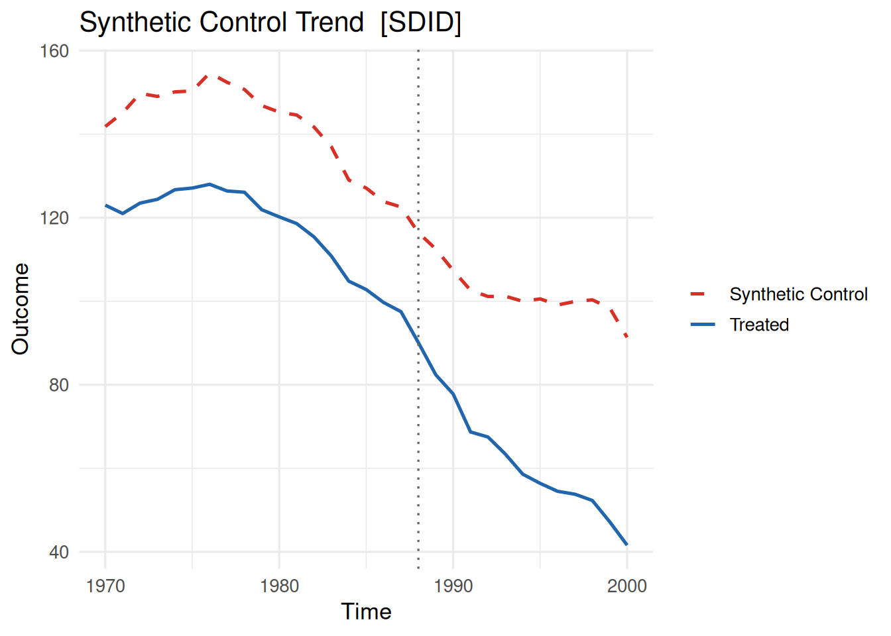
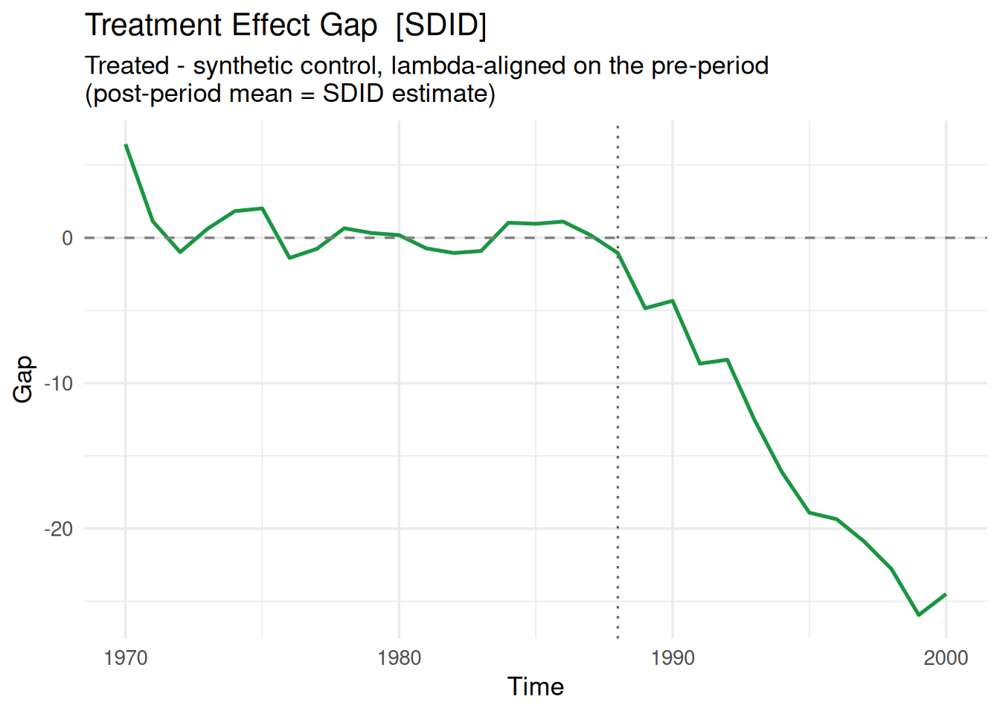
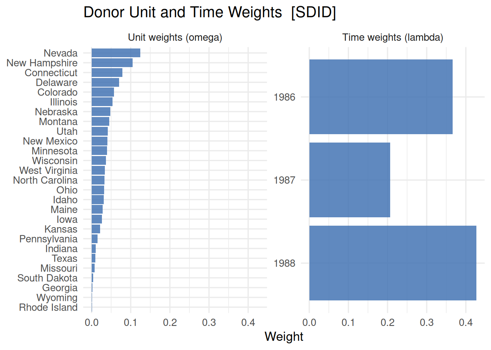
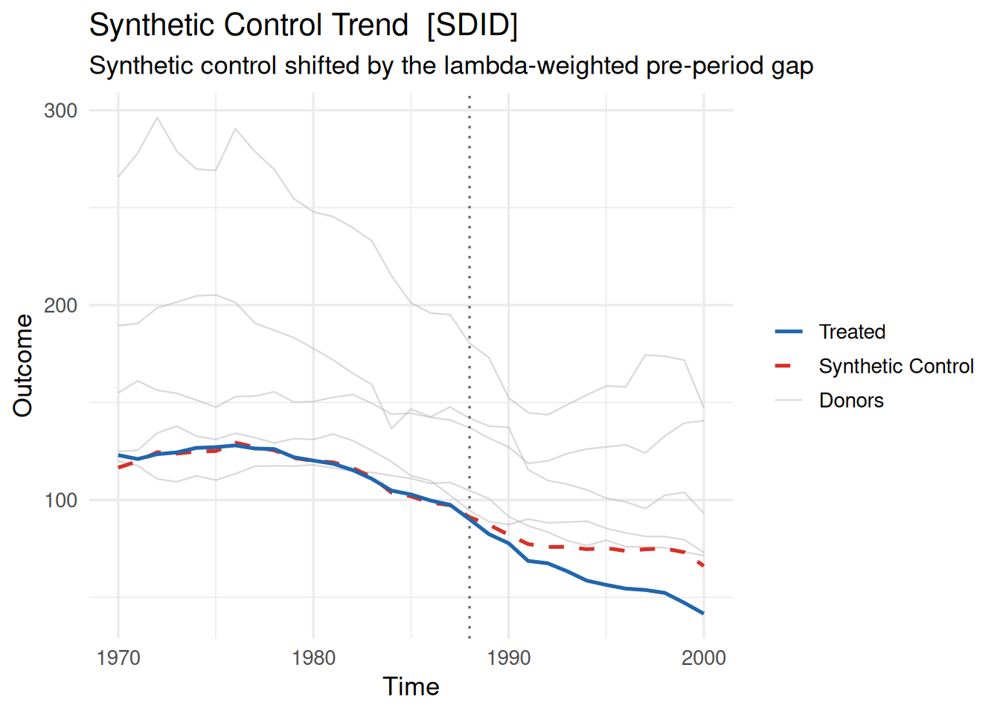
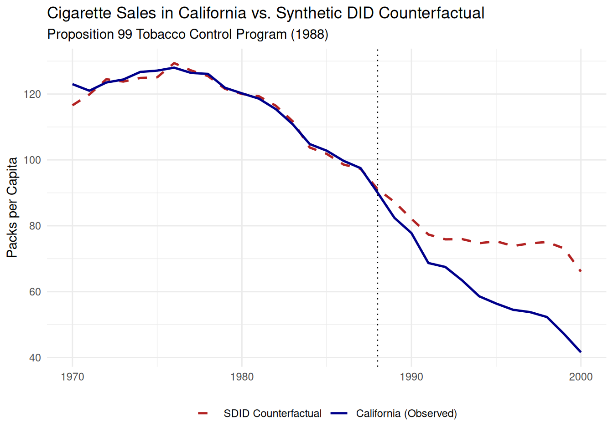
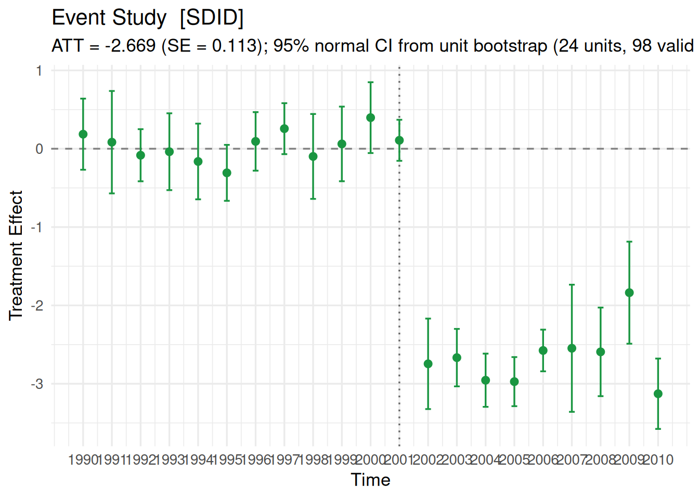

library(coresynth)
library(synthdid)
library(tidyverse)


Introduction
The {coresynth} package is an R package I developed to implement methods related to the synthetic control method easily and quickly, including the Synthetic Control Method (SCM), Synthetic Difference-in-Differences (SDID), Generalized Synthetic Control (GSC), and Matrix Completion (MC). While the previous post covered the basic synthetic control method, this post focuses on Synthetic Difference-in-Differences (SDID), walking step-by-step from an overview of the method to model estimation, visualization, and inference procedures using coresynth.
What is Synthetic Difference-in-Differences?
Proposed by Arkhangelsky et al. (2021) in the American Economic Review, Synthetic Difference-in-Differences is an important method in causal inference. SDID combines two of the most widely used empirical methodologies in econometrics: Difference-in-Differences (DID) and the Synthetic Control Method (SCM) (Abadie et al. 2010).
Traditional DID relies on the parallel trends assumption, positing that in the absence of treatment, the average outcomes of the treated and control units would have moved in parallel over time. In practice, this assumption often fails when treated and untreated units differ substantially in their observable and unobservable characteristics. Standard DID also assigns uniform weights to all control units and all pre-treatment periods, regardless of how relevant they are for predicting the treated trajectory.
On the other hand, SCM constructs a data-driven weighted average of control units (unit weights \(\omega_i\)) to reproduce the treated unit’s pre-treatment outcome levels. However, standard SCM does not incorporate an intercept shift (fixed effects) and restricts weights to the simplex (\(\sum \omega_i = 1, \omega_i \ge 0\)). As a result, when the treated unit lies outside the convex hull of the donor pool (for example, when the treated unit has a consistently higher baseline level than any donor), SCM cannot extrapolate, which can cause poor pre-treatment fit and bias.
SDID synthesizes the core strengths of both worlds by introducing three complementary mechanisms:
- Unit weights (\(\hat\omega_i\)): Control units are reweighted so that their weighted average exhibits parallel trends with the treated unit prior to intervention, relaxing the traditional DID requirement that all controls be parallel on average.
- Time weights (\(\hat\lambda_t\)): Pre-treatment periods are reweighted so that recent pre-treatment periods matching the post-treatment counterfactual slope receive greater emphasis, making the estimator robust to time-varying confounders.
- Double differencing (Intercept shift): Like DID, SDID incorporates unit and time fixed effects, absorbing permanent level differences between the treated unit and the donor pool.
Mathematically, the SDID treatment effect for a single treated unit is expressed as:
\[\hat{\tau}^{\text{sdid}} = \left( \bar{Y}_{\text{post}}^{\text{tr}} - \sum_{t=1}^{T_{\text{pre}}} \hat{\lambda}_t Y_{1t} \right) - \sum_{i \in \text{control}} \hat{\omega}_i \left( \bar{Y}_{\text{post}, i} - \sum_{t=1}^{T_{\text{pre}}} \hat{\lambda}_t Y_{it} \right)\]
where \(\bar{Y}_{\text{post}}^{\text{tr}}\) is the post-treatment average of the treated unit, \(Y_{1t}\) is the treated unit’s outcome at pre-treatment time \(t\), and \(\bar{Y}_{\text{post}, i}\) is the post-treatment average of control unit \(i\).
Why Use {coresynth} for SDID?
While {synthdid} is widely considered the standard R package for SDID, empirical causal inference frequently requires repeated computations: calculating standard errors via bootstrap, running leave-one-out placebo tests across dozens of donors, conducting sensitivity analyses, or testing multiple treatment specifications.
The {coresynth} package is designed and implemented in C++ via RcppArmadillo to enable fast analysis without sacrificing mathematical precision:
- ⚡ Fast Coordinate Descent & Factor-Form Solvers: In coresynth 1.0.0 and above, SDID unit weights are computed directly in factor form rather than forming and decomposing the dense \(N \times N\) donor Gram matrix. This makes estimation and inference routines 5–10× faster on panels with many donors.
- 🧩 Unified Interface: Run SDID alongside SCM, Generalized Synthetic Control (GSC), Matrix Completion (MC), Time-Aware Synthetic Control (TASC), and Synthetic Interventions (SI) through the exact same
scm_fit()formula syntax. - 📊 Inference: Native support for placebo permutation tests, unit bootstrap, jackknife, global jackknife (for staggered designs), conformal inference, and dynamic event studies (available in development version).
- 📈 Diagnostics: Unified
plot()methods with level-alignment (align = TRUE), donor path overlays (show_donors), and dual-panel weight visualizations.
Setup & Installation
You can install the released version of coresynth from CRAN, or grab the latest development version directly from GitHub:
# Install released version from CRAN
pak::pak("coresynth")
# Or install development version from GitHub
pak::pak("yo5uke/coresynth")Next, let’s load coresynth into your R session alongside {tidyverse}. For benchmark comparison, we also load {synthdid}.
Data: California Proposition 99
To compare our results with (Arkhangelsky et al. 2021), we use the smoking dataset from the {tidysynth} package. This panel tracks per-capita cigarette sales across 39 US states from 1970 to 2000. California passed Proposition 99 in November 1988, taking effect in 1989.
data("smoking", package = "tidysynth")| state | year | cigsale | lnincome | beer | age15to24 | retprice |
|---|---|---|---|---|---|---|
| Rhode Island | 1970 | 123.9 | NA | NA | 0.1831579 | 39.3 |
| Tennessee | 1970 | 99.8 | NA | NA | 0.1780438 | 39.9 |
| Indiana | 1970 | 134.6 | NA | NA | 0.1765159 | 30.6 |
| Nevada | 1970 | 189.5 | NA | NA | 0.1615542 | 38.9 |
| Louisiana | 1970 | 115.9 | NA | NA | 0.1851852 | 34.3 |
Preparing the Binary Treatment Indicator
As in all coresynth estimators, scm_fit() requires a binary treatment column that equals 1 for the treated unit in the post-treatment period, and 0 otherwise:
smoking <- smoking |>
mutate(
treated = if_else(state == "California" & year >= 1989, 1L, 0L)
)Because California enacted the policy starting in 1989, treated is 1 exclusively for California for years 1989 through 2000.
Estimation with scm_fit()
In coresynth, you invoke SDID simply by setting method = "sdid":
core_sdid <- scm_fit(
cigsale ~ treated | state + year,
data = smoking,
method = "sdid"
)The model formula is specified in the form outcome ~ treated | unit + time.
Speed Benchmark: {coresynth} vs. {synthdid}
We benchmark coresynth’s execution speed against {synthdid} for the full estimation and leave-one-out placebo inference routine across all donors:
Here we run scm_fit() and immediately calculate the full placebo distribution via sdid_inference():
core_sdid <- scm_fit(
cigsale ~ treated | state + year,
data = smoking,
method = "sdid"
)
core_placebo <- sdid_inference(core_sdid, method = "placebo")0.039 sec elapsedFor comparison, here is the equivalent specification implemented in {synthdid} (note that synthdid::panel.matrices() requires a base data.frame rather than a tibble so that column subsetting returns a vector):
setup <- synthdid::panel.matrices(
smoking |>
transmute(
unit = state,
time = year,
y = cigsale,
treated = treated
) |>
as.data.frame()
)
sdid_est <- synthdid::synthdid_estimate(setup$Y, setup$N0, setup$T0)
sdid_se_plac <- synthdid::synthdid_se(sdid_est, method = "placebo")32.12 sec elapsedIn this comparison, coresynth finishes in 0.04 seconds, whereas synthdid takes 32.12 seconds—a 803.0× speedup.
When running extensive sensitivity analyses, computing bootstrap standard errors, or testing multiple candidate donor pools, waiting for slow estimations quickly adds up. This efficiency gain was a core motivation behind developing coresynth.
Inspecting the Model Summary
Calling summary() on a fitted SDID model prints the essential estimation metrics, including the pre/post period lengths, the estimated Average Treatment Effect on the Treated (ATT), and the active donor unit weights:
summary(core_sdid)=== coresynth summary ===
Method : SDID
Periods : T_pre = 19 | T_post = 12
ATT estimate: -15.60459
Unit weights (non-zero donors):
Colorado Connecticut Delaware Georgia Idaho
0.0574 0.0784 0.0704 0.0020 0.0315
Illinois Indiana Iowa Kansas Maine
0.0535 0.0103 0.0262 0.0218 0.0283
Minnesota Missouri Montana Nebraska Nevada
0.0397 0.0081 0.0452 0.0481 0.1242
New Hampshire New Mexico North Carolina Ohio Pennsylvania
0.1046 0.0407 0.0326 0.0317 0.0157
Rhode Island South Dakota Texas Utah West Virginia
0.0013 0.0043 0.0101 0.0417 0.0338
Wisconsin Wyoming
0.0369 0.0015 The estimated ATT indicates that Proposition 99 reduced California’s cigarette consumption by approximately 15.6 packs per capita per year, corroborating the primary findings of Arkhangelsky et al. (2021). Notice how this compares with standard SCM (\(\approx -19.0\) packs) and standard DID (\(\approx -27.3\) packs): SDID accommodates level shifts while matching pre-treatment slopes.
Visualizing Trends, Level Alignment, and Weights
Visualizing results is important for credible causal inference. In SDID, counterfactual visualization requires extra care because the estimator incorporates an intercept shift and time weights.
Raw Trajectory vs. Level-Aligned Plot (align = TRUE)
In standard SCM, the synthetic control directly matches the treated unit’s pre-treatment level. In SDID, however, units match trends up to a free intercept shift. Consequently, a raw trajectory plot (align = FALSE, default) displays the synthetic series at its unadjusted level.
By specifying align = TRUE, coresynth offsets the synthetic series by the \(\hat\lambda\)-weighted pre-period gap. Under this alignment, the post-treatment visual gap between the two lines corresponds exactly to the SDID treatment effect (\(\hat\tau^{\text{sdid}}\)):
plot(core_sdid, type = "trend", align = TRUE)
The synthetic California series is vertically shifted so that the pre-treatment time-weighted baseline matches California, making the post-1988 divergence immediately interpretable as the causal effect.
plot(core_sdid, type = "trend", align = FALSE)
The raw plot illustrates the actual unadjusted levels of the synthetic composite compared to California, highlighting the presence of a baseline level difference that SDID effectively absorbs.
Gap Plot
The gap plot (type = "gap") plots the estimated treatment effect over time:
plot(core_sdid, type = "gap", align = TRUE)
With align = TRUE, the pre-treatment gap fluctuates closely around zero, and the post-treatment line confirms the steady decrease in cigarette sales following the policy adoption.
Inspecting Unit and Time Weights
A key feature of SDID is that it solves for both unit weights (\(\hat\omega_i\)) and pre-treatment time weights (\(\hat\lambda_t\)). Calling plot(..., type = "weights") on an SDID object generates a two-panel chart displaying both weight vectors:
plot(core_sdid, type = "weights")
The top panel illustrates which donor states carry positive weight in constructing the synthetic counterfactual (e.g., Utah, Montana, Nevada). The bottom panel displays the time weights \(\hat\lambda_t\), showing how recent pre-treatment years (such as 1987–1988) are prioritized to best match the trajectory leading up to the intervention.
Overlaying Donor Trajectories (show_donors)
To assess whether the synthetic control is interpolating plausibly among donor units, you can pass show_donors = N to draw the raw trajectories of the top \(N\) donor states as thin background lines:
plot(core_sdid, type = "trend", align = TRUE, show_donors = 5)
Customizing Plots with ggplot2
Because all coresynth plots are standard ggplot2 objects, you can easily customize styling, labels, colors, and line types using native ggplot2 grammar. For details on all arguments supported in plot(), see ?plot.coresynth.
plot(
core_sdid,
type = "trend",
align = TRUE,
colors = c(treated = "darkblue", synthetic = "firebrick"),
labels = c(treated = "California (Observed)", synthetic = "SDID Counterfactual"),
linetypes = c(treated = "solid", synthetic = "dashed"),
vline = list(color = "black", linetype = "dotted"),
vline_offset = -1
) +
labs(
title = "Cigarette Sales in California vs. Synthetic DID Counterfactual",
subtitle = "Proposition 99 Tobacco Control Program (1988)",
x = NULL,
y = "Packs per Capita"
) +
theme_minimal() +
theme(legend.position = "bottom")
Statistical Inference with sdid_inference()
Quantifying statistical uncertainty is essential for credible causal evaluation. While SCM relied almost exclusively on permutation placebo tests (Abadie et al. 2010), SDID provides a framework with multiple inference methods (Arkhangelsky et al. 2021; Clarke et al. 2024).
In coresynth, statistical inference is unified under sdid_inference(). The function provides four primary inferential methods:
sdid_inference(
fit,
method = c("placebo", "bootstrap", "jackknife", "jackknife_global"),
n_boot = 200L,
level = 0.95,
alternative = c("two.sided", "greater", "less"),
seed = NULL
)Choosing the Right Inference Method
The appropriate choice of inference method depends primarily on the design of your study and the questions being asked:
- Single Treated Unit (\(N_{\text{tr}} = 1\)): When only one unit is treated (as in our California study), donor resampling alone cannot vary the treated unit’s idiosyncratic time-series shocks. In this setting, use
method = "placebo"or Conformal Inference (conformal_inference()) to construct empirical benchmarks for hypothesis testing. - Assessing Donor Selection Uncertainty: The control bootstrap (
method = "bootstrap") or jackknife (method = "jackknife") assesses sampling variability across the donor pool by resampling or dropping control units while holding the treated unit trajectories fixed. - Staggered Adoption (\(N_{\text{tr}} \ge 2\) across cohorts): For roll-out designs where units adopt treatment at different times, use
method = "jackknife_global"to account for cross-cohort covariance across the entire panel. - Distribution-Free Assumption: For finite-sample validity without parametric noise assumptions, use Conformal Inference via
conformal_inference().
1. Placebo Permutation Inference (method = "placebo")
For California Proposition 99, where \(N_{\text{tr}} = 1\), we employ the in-space placebo permutation procedure (Algorithm 4 of Clarke et al. (2024) and Arkhangelsky et al. (2021)). Treatment is iteratively reassigned to each donor state to construct the empirical null distribution:
inf_placebo <- sdid_inference(core_sdid, method = "placebo")
inf_placeboSDID Inference (placebo, alternative = two.sided)
Estimate : -15.6046
SE : 9.3619
p-value : 0.1026
CI : [-33.9536, 2.7444]
Controls : 38 inf_placebo$p_value reports the two-sided permutation \(p\)-value. Additionally, sdid_inference() calculates the standard error as the standard deviation of the placebo distribution, alongside a normal-approximation 95% confidence interval (ci_lower and ci_upper).
Notice that because the placebo standard error assumes the treated unit’s noise variance is comparable to that of the donor units, it should be interpreted thoughtfully when donor pools are modest in size.
2. Unit Bootstrap (method = "bootstrap")
In coresynth, method = "bootstrap" implements a donor bootstrap that draws \(N_{\text{co}}\) control units with replacement from the donor pool while holding the treated series fixed, re-estimating unit weights \(\hat\omega\) and time weights \(\hat\lambda\) on each replicate. This evaluates standard errors and confidence intervals driven by donor-pool composition and weight uncertainty.
To illustrate how multi-unit inference operates in coresynth, let’s generate a synthetic panel with 4 treated units and 20 control units:
set.seed(42)
multi_panel <- expand.grid(unit = 1:24, year = 1990:2010)
multi_panel$treated <- as.integer(multi_panel$unit <= 4 & multi_panel$year >= 2002)
multi_panel$y <- multi_panel$unit * 1.5 + 0.8 * (multi_panel$year - 1990) +
rnorm(nrow(multi_panel), sd = 0.5) - 2.5 * multi_panel$treated
fit_multi <- scm_fit(y ~ treated | unit + year, data = multi_panel, method = "sdid")Now we execute the bootstrap with n_boot = 200:
inf_boot <- sdid_inference(fit_multi, method = "bootstrap", n_boot = 200, seed = 123)
inf_boot$se[1] 0.1223251inf_boot$p_value[1] 1.537641e-105c(inf_boot$ci_lower, inf_boot$ci_upper)[1] -2.966984 -2.4678413. Jackknife Variance Estimation (method = "jackknife")
The jackknife drops one control unit at a time from the donor pool and recomputes the SDID estimator while holding the treated series fixed. Because it evaluates sensitivity to individual donor exclusions and avoids large quadratic programs, it runs almost instantaneously:
inf_jack <- sdid_inference(fit_multi, method = "jackknife")
inf_jack$se[1] 0.09577276inf_jack$p_value[1] 6.531321e-171For staggered adoption panels, method = "jackknife_global" drops each unit from the entire multi-cohort panel simultaneously, correctly preserving the covariance between cohorts.
4. Conformal Inference (conformal_inference())
If you prefer hypothesis tests with exact finite-sample guarantees that avoid asymptotic approximations, coresynth provides Conformal Inference based on Chernozhukov et al. (2021). It constructs a moving-block permutation test under the null hypothesis of no treatment effect:
conf_res <- conformal_inference(core_sdid, level = 0.95)
conf_res$p_value[1] 0.2903226c(conf_res$ci_lower, conf_res$ci_upper)[1] -27.129516 -4.079668Dynamic Effects & Event Studies: sdid_event_study()
[!NOTE]
sdid_event_study()is currently available only in the development version of coresynth (pak::pak("yo5uke/coresynth")).
Researchers often want to inspect dynamic treatment trajectories—confirming that pre-treatment coefficients are indistinguishable from zero (pre-trend check) while tracing out how effects unfold post-intervention.
coresynth provides the dedicated sdid_event_study() function for this purpose. It computes period-by-period treatment effects aligned on the \(\hat\lambda\)-weighted pre-treatment baseline. Crucially, the post-treatment average of the period-specific coefficients equals the aggregate SDID ATT (fit$estimate) exactly:
es_res <- sdid_event_study(
fit_multi,
n_boot = 100,
seed = 42
)
es_res=== SDID Event Study (unit bootstrap, 24 units) ===
ATT Estimate : -2.669
ATT SE : 0.1135
p-value : < 1e-04
95% CI (norm): [-2.8914, -2.4466]
95% CI (pct) : [-2.9837, -2.5178]
Bootstrap : 98 valid / 100 requested (2 discarded)
Period-by-period effects (lambda-aligned; post-period mean = ATT):
time period estimate se ci_norm_lower ci_norm_upper ci_pct_lower
1990 pre 0.1855 0.2316 -0.2684 0.6395 -0.3647
1991 pre 0.0835 0.3335 -0.5703 0.7372 -0.3977
1992 pre -0.0831 0.1697 -0.4157 0.2496 -0.3478
1993 pre -0.0381 0.2502 -0.5286 0.4523 -0.6192
1994 pre -0.1628 0.2465 -0.6460 0.3203 -0.6895
1995 pre -0.3078 0.1822 -0.6649 0.0493 -0.7070
1996 pre 0.0934 0.1906 -0.2801 0.4670 -0.2366
1997 pre 0.2562 0.1660 -0.0691 0.5815 -0.0919
1998 pre -0.0985 0.2764 -0.6403 0.4433 -0.7148
1999 pre 0.0612 0.2430 -0.4150 0.5374 -0.2661
2000 pre 0.3969 0.2307 -0.0552 0.8490 -0.0666
2001 pre 0.1075 0.1336 -0.1543 0.3694 -0.1182
2002 post -2.7456 0.2947 -3.3232 -2.1680 -3.4195
2003 post -2.6668 0.1871 -3.0334 -2.3001 -3.0655
2004 post -2.9553 0.1733 -3.2949 -2.6156 -3.3258
2005 post -2.9730 0.1599 -3.2864 -2.6595 -3.2839
2006 post -2.5753 0.1357 -2.8413 -2.3094 -2.8663
2007 post -2.5470 0.4140 -3.3584 -1.7355 -3.4072
2008 post -2.5930 0.2884 -3.1583 -2.0276 -3.1925
2009 post -1.8374 0.3323 -2.4887 -1.1861 -2.4329
2010 post -3.1276 0.2292 -3.5768 -2.6784 -3.5492
ci_pct_upper
0.5440
0.8012
0.2906
0.3748
0.2228
-0.0154
0.5352
0.5942
0.3260
0.6190
0.7993
0.4177
-2.2548
-2.3392
-2.6547
-2.7004
-2.3832
-1.7256
-2.2045
-1.1699
-2.6808Visualizing the Event Study
You can plot the event-study trajectory directly using the S3 plot() method:
plot(es_res)
The resulting figure displays period-specific point estimates accompanied by confidence interval bands. The pre-treatment periods center closely around zero, validating the pre-trend fit, while the post-treatment drop vividly illustrates the causal effect over time.
Cluster Bootstrap Support
If units belong to geographical clusters (such as districts within states or prefectures), you can pass cluster = "cluster_var" and data = panel_df to sdid_event_study(). The function will perform block-cluster resampling of entire clusters with replacement, ensuring valid inference even in the presence of arbitrary intra-cluster correlation.
Advanced Topics
Time-Varying Covariates
SDID supports adjusting for time-varying confounders via the covariates argument. Following Clarke et al. (2024) and Arkhangelsky et al. (2021), covariates are residualized out of the outcome using two-way fixed effects before computing the unit and time weights:
# Example with time-varying covariates (e.g., retail price)
fit_cov <- scm_fit(
cigsale ~ treated | state + year,
data = smoking,
method = "sdid",
covariates = "retprice"
)
summary(fit_cov)Staggered Adoption
When different units receive treatment at different points in time, coresynth automatically detects the staggered timing and applies the cohort aggregation framework of Clarke et al. (2024):
# Staggered adoption SDID fit
fit_stagg <- scm_fit(
y ~ treated | unit + year,
data = staggered_panel,
method = "sdid",
control_group = "never_treated" # Default in v1.0.0+
)
fit_stagg$cohort_estimatesIn coresynth 1.0.0 and later, control_group = "never_treated" is the default, ensuring that only pure, never-treated units serve as donors for each adoption cohort to prevent contamination from future adopters.
Tidy Ecosystem Integration & JSON Export
To ensure smooth integration into reproducible research pipelines, coresynth fully supports {broom} tidying methods and structured JSON serialization:
Broom Integration: tidy() and glance()
broom::tidy(inf_placebo) term estimate std.error statistic p.value conf.low conf.high method
1 ATT -15.60459 9.361917 -1.666816 0.1025641 -33.95361 2.744429 placebo
alternative n_controls staggered
1 two.sided 38 FALSEbroom::glance(inf_placebo) method n_controls staggered estimate std.error p.value conf.low
1 placebo 38 FALSE -15.60459 9.361917 0.1025641 -33.95361
conf.high alternative n_boot_valid
1 2.744429 two.sided NAExtracting Tidy Data via plot_data()
If you wish to create fully custom visualizations in ggplot2 or export tabular summaries, plot_data() provides raw data frames:
# Extract aligned trend data
plot_data(core_sdid, type = "trend", align = TRUE) |> head() time value series
1 1970 123.0 Treated
2 1971 121.0 Treated
3 1972 123.5 Treated
4 1973 124.4 Treated
5 1974 126.7 Treated
6 1975 127.1 Treated# Extract unit and time weights
plot_data(core_sdid, type = "weights") |> head() unit weight panel
1 Alabama 0.000000000 omega
2 Arkansas 0.000000000 omega
3 Colorado 0.057429525 omega
4 Connecticut 0.078401014 omega
5 Delaware 0.070446947 omega
6 Georgia 0.001986351 omegaExporting Results to JSON
For cross-language pipelines (e.g., Python, dashboards) and archiving, use export_json():
export_json(core_sdid, file = "sdid_results.json", inference = inf_placebo)Summary & Feedback
Synthetic Difference-in-Differences is an estimator that addresses the weaknesses of both standard DID and classical SCM. With {coresynth}, running SDID is as simple as writing a standard regression formula, backed by fast C++ optimization, along with versatile tools for inference and visualization.
I hope coresynth helps accelerate your causal inference workflow.
If you have any questions, encounter bugs, or would like to request new features, please feel free to open an issue on the GitHub Repository or reach out on X (@5uke_y)!
References
Abadie, Alberto, Alexis Diamond, and Jens Hainmueller. 2010. "Synthetic Control Methods for Comparative Case Studies: Estimating the Effect of California’s Tobacco Control Program". Journal of the American Statistical Association 105 (490): 493–505. https://doi.org/10.1198/jasa.2009.ap08746.
Arkhangelsky, Dmitry, Susan Athey, David A. Hirshberg, Guido W. Imbens, and Stefan Wager. 2021. "Synthetic Difference-in-Differences". American Economic Review 111 (12): 4088–118. https://doi.org/10.1257/aer.20190159.
Chernozhukov, Victor, Kaspar Wüthrich, and Yinchu Zhu. 2021. "An Exact and Robust Conformal Inference Method for Counterfactual and Synthetic Controls". Journal of the American Statistical Association 116 (536): 1849–64. https://doi.org/10.1080/01621459.2021.1920957.
Clarke, Damian, Daniel Pailañir, Susan Athey, and Guido Imbens. 2024. "On Synthetic Difference-in-Differences and Related Estimation Methods in Stata". The Stata Journal 24 (4): 557–98. https://doi.org/10.1177/1536867X241297914.